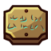

Guide FR interactif · 100%
Le cockpit pour finir Minishoot’ Adventures.
Un site pensé pour téléphone, tablette et navigateur : progression, checklist sauvegardée, collectibles, secrets et dépannage rapide.


Mission active
Nettoyage 100%
Images officielles Steam · Carte interactive = source absolue
Accès rapide
Choisis ce que tu veux faire
Suivre le parcours
Route complète : histoire, donjons, retours, finale et post-game.
Cocher le 100%
Checklist interactive sauvegardée sur ton appareil.
Modules
Modules, skills et upgrades.
Courses
8 races, course #2, reward.
Scarabées
18 scarabées dorés.

Je suis bloqué
Module manquant, Wounded Heart, Family Home...
Méthode
Utilise la carte comme base, le site comme copilote.
La carte interactive donne les emplacements exacts. Le site t’aide à savoir quoi faire, dans quel ordre, et quoi vérifier quand il manque quelque chose.